User Guide for Caché#
Introduction#
Aurreum Data Protection Suite (ADPS) provides the capability for the backup and restore of Caché databases. This guide introduces how to properly use ADPS to back up and restore Caché databases.
Features#
Feature |
Description |
|---|---|
Backup source |
Database (single, multiple) |
Backup type |
Full backup: Back up all databases except the CACHESYS database. |
Backup target |
Standard storage pool, de-duplication storage pool, local storage pool, tape library pool, object storage service pool, LAN-Free pool |
Reconnection time |
The job continues after the abnormal reset occurs in the network within the set time. Available only for the backup job. |
Stop jobs |
Stop the backup and restore jobs. |
Backup compression |
None, fast, tunable |
Backup schedule |
Immediate, one-time, minutely, hourly, daily, weekly, monthly |
Restore type |
Timepoint restore: Restore a database to a specific point-in-time state. |
Restore target |
Overwrite the original database, create a new database |
Restore granularity |
Database (Single) |
Restore to a different host |
Restoring to a different host requires the same OS and database version. |
Pre/Post action |
The pre action is executed after the job starts and before the resource is backed up or restored. The post action is executed after the resource is backed up or restored. |
Storage pool replication |
Replicate backup sets from the source storage pool to another pool |
Restore from the target pool |
Restore backup sets from the target storage pool |
Speed limit |
Limit data transfer speed or disk read and write speed at different times |
D2C |
Back up data directly to the object storage. |
D2T |
Back up data directly to the tape library. |
LAN-Free |
Back up to and restore from LAN-Free storage pools. |
Modify the backup source and target |
Modify the backup source and backup target of a job. |
IPv6 |
Transfer and manage data over IPv6 network. |
Install and Configure Agent#
Verify Compatibility#
ADPS supports the backup and restore of Caché single instance, multiple instances, master-slave and master-master replication cluster. Before deploying the agent, check whether the operating system (OS) and database version are supported. See the following information for the mainly supported database versions:
Caché 2010/2016/2017/2018
Download Agent Package#
Log in to ADPS console as the admin. Click Resource -> Install Agent icon and download the installation packages according to your needs.

Install and Configure Agent on Windows OS#
Download Agent Installation Package#
In the Install agent window, select Windows and click Download Windows agent to download the package.
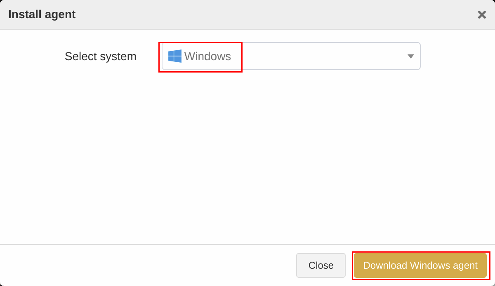
Install Agent on Windows#
Upload the installation package to the target host.
Double-click the package to launch the setup wizard and click Next.
This installation package is a collection of components. It checks the database resources, files, or applications installed on the host by default. Select the CacheDB component and click Next.
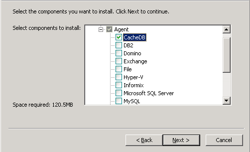
Set the Backup Server Host, Backup Server Port, and Access Key. Click Next.
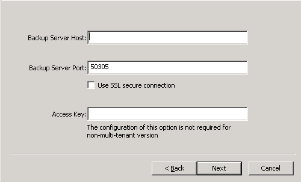
Select Destination Folder and click Next to install the software. Wait for the installation to complete.
Note:
The Access Key is used to identify users on the agent. On Personal Settings -> Settings -> Home page, you can view your own Access Key after logging in to the backup server.
If the backup server is a non-tenant version, it is not required to configure Access Key.
If the backup server is a tenant version, then an Access Key is required. If you leave it blank, the resource will be bound to the admin. If you enter the Access Key, the resource will be bound to the corresponding tenant.
Install Agent on Linux#
Select Linux as the system and InterSystems Caché as the module. Copy an installation command.
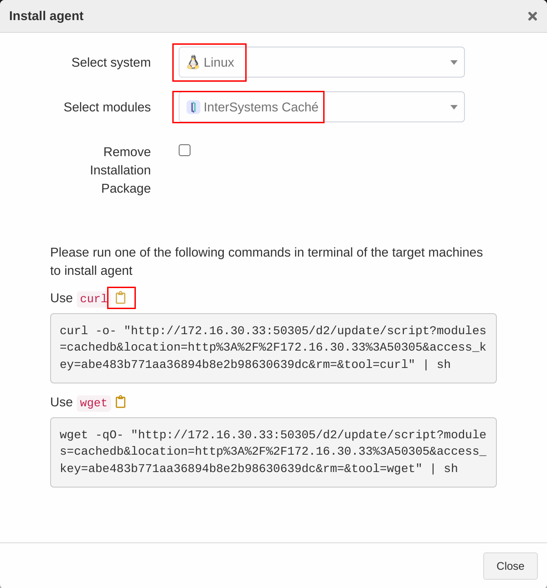
Paste the command on the command line and press Enter to execute the installation.
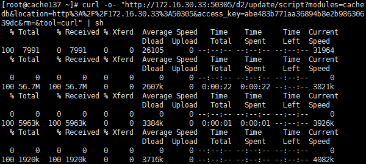
Check Successful Installation#
After the successful installation, log in to ADPS console as the admin and go to the Resource page. The host with the agent installed will be available on the Resource list.
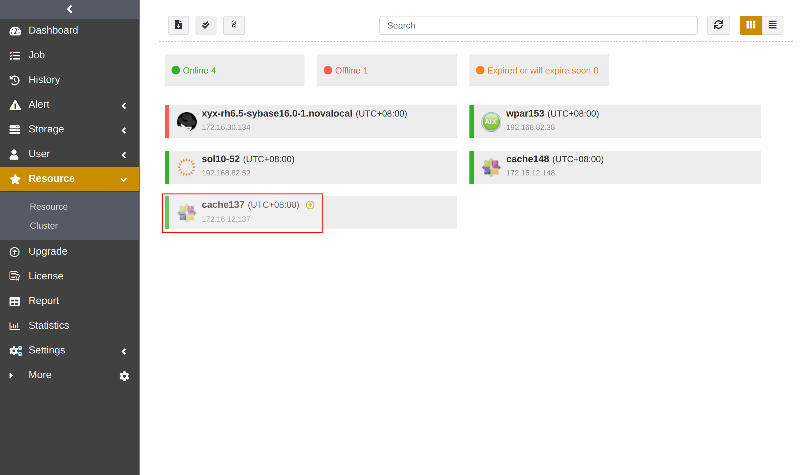
Before You Begin#
Check Database Status#
Check the Caché status. The Caché should be in the “running” status for backup and restore.
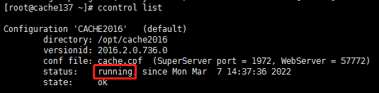
Check Resource#
Log in to ADPS console as the operator and go to Resource. You can see the activated and authorized resource with an “Online” state on the list. Please check Activate License and Assign Authorization if the resource is not available.
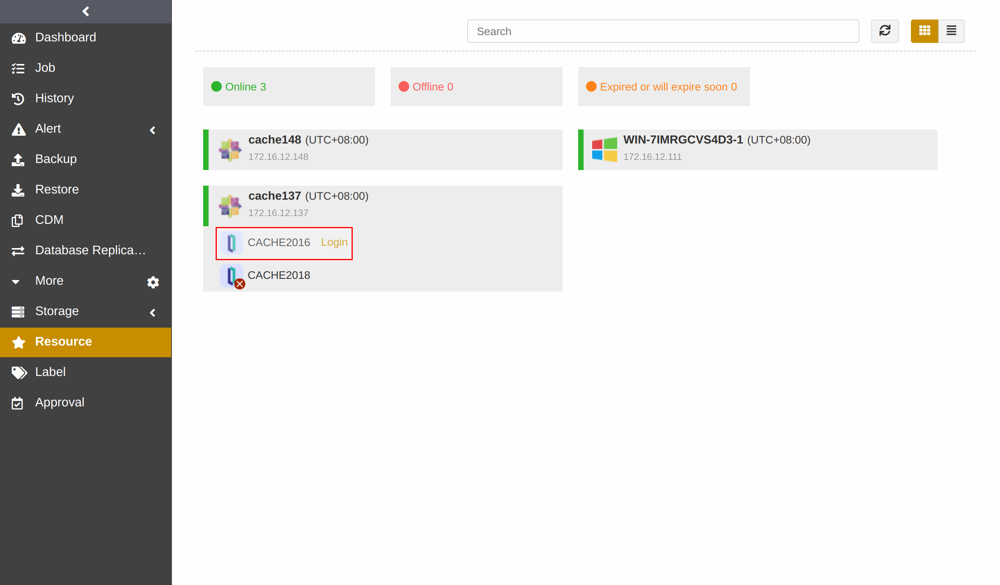
Check Storage Pool#
Log in to ADPS console as the operator, go to Storage Pool, and verify the presence of storage pools. If no storage pool is available, please contact the admin to create one and assign permissions to the operator.
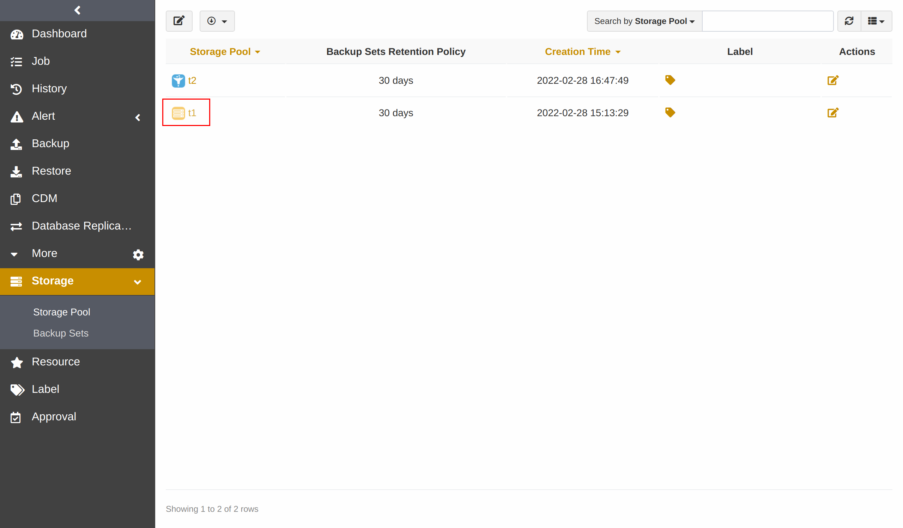
First Time Login#
Before creating the first Caché backup and restore, go to Resource and click Login next to the resource to log in to Caché.
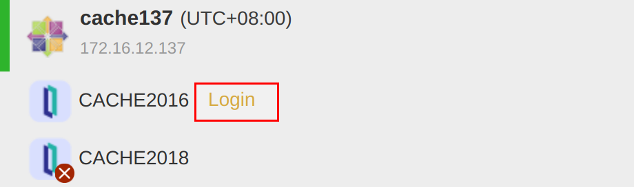
Enter the User and Password. Click Login.
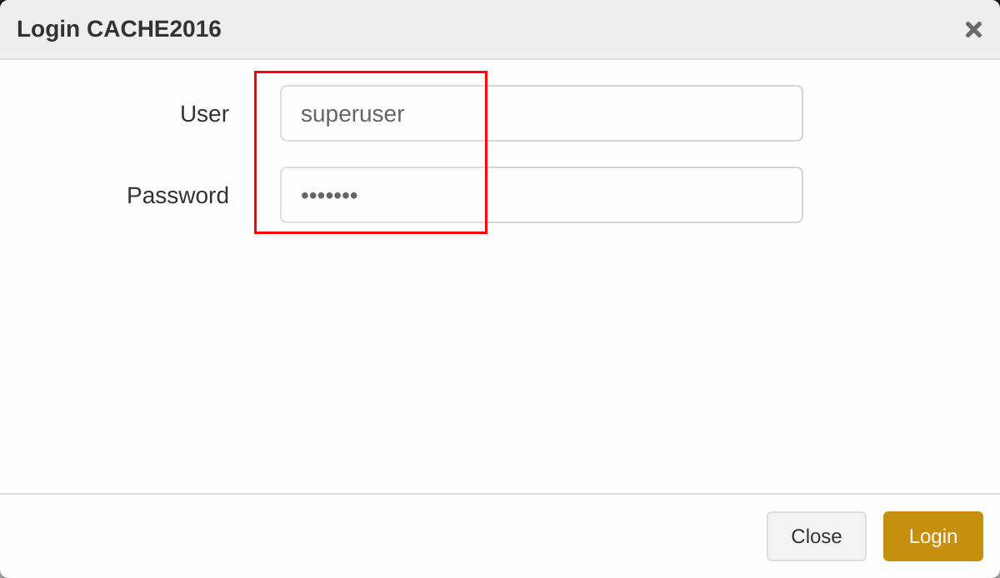
Note:
Use the user and password for the Caché Management Portal to log in to the Caché database resource on ADPS.
Select the Unicode database option during the Caché 2016 installation.
After Caché is installed, add the Caché installation directory to the environment variable path.
Create Backup Jobs#
This chapter introduces how to back up the Caché databases.
Prerequisites#
The agent has been installed. For installation, see Install and Configure Agent.
The license has been activated, and the resource has been authorized to users. For details, see Activate License and Authorize User.
Log in to the ADPS console as the operator with resource permissions.
Create Full Backup Jobs#
(1) Click Backup. Select the Caché host and instance.
(2) Select Full as the Backup Type and choose the databases to be backed up.
(3) Select Backup Target. You can choose a standard storage pool, de-duplication storage pool, tape library pool, object storage service pool, and LAN-Free pool.
Note:
It is not supported to store full backups, incremental backups and log backups in different storage pools.
(4) Go to Backup Schedule to set the execution time of the backup job. For details, see Backup Schedule Operation. It is generally recommended to run a full backup on a weekly basis.
(5) Set Backup Options, including common options and advanced options.
Common options:

Compression: Fast is enabled by default.
None: No data compression during the backup.
Tunable: You can customize the compression level, which requires the activated feature of Advanced Compression.
Fast: Use the fast compression algorithms during the backup.
Advanced options:
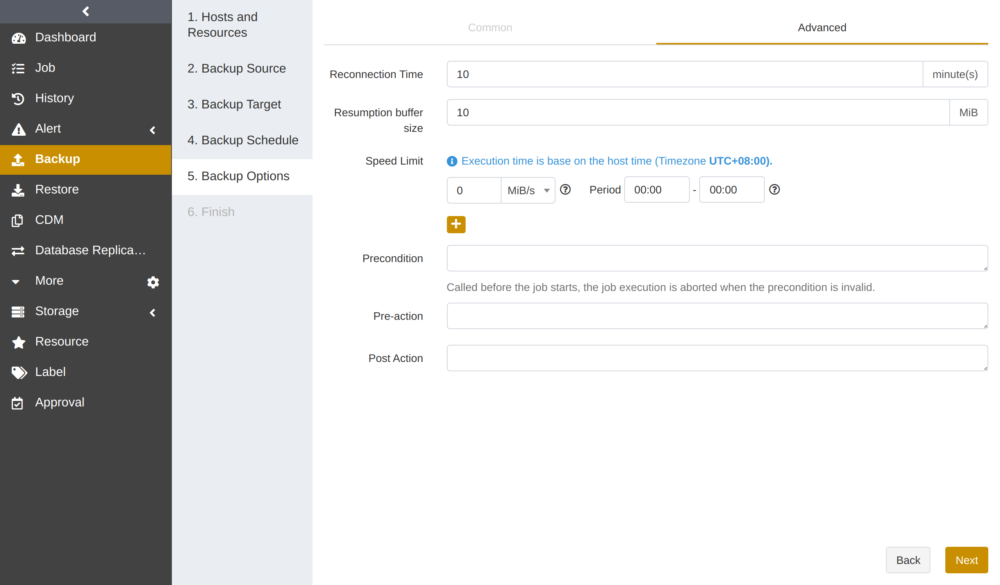
Reconnection time: The job continues after the abnormal reset occurs in the network within the set time. The value can be 1 to 60. The unit is minute(s).
Speed limit: Set the limit for data transfer speed or disk read and write speed. The unit can be MiB/s or KiB/s. Click the ‘’+‘’ icon to add limits at different times.
Precondition: The precondition is checked before the job starts. The job execution is aborted when the precondition is invalid.
Pre/Post action: The pre action is executed after the job starts and before the resource is backed up or restored. The post action is executed after the resource is backed up or restored.
(6) Set Job Name and confirm the job information. Click Submit.
Note:
Caché database name supports only 1 to 64 characters, starting with a letter, and may contain alphanumerics, dashes, or underscores.
When you create a database via SQL statements, two databases are automatically created. Select one of the databases for backup, and the backup job will back up both databases.
File permissions are required to add a local storage pool.
Create Incremental Backup Jobs#
An incremental backup only backs up data that has changed since the last full/incremental backup. It is recommended to create incremental backup jobs at short intervals (such as daily) to ensure that you have at least one recoverable point in time every week.
Creating an incremental backup job is the same as creating a full backup job. Select Incremental as the backup type.
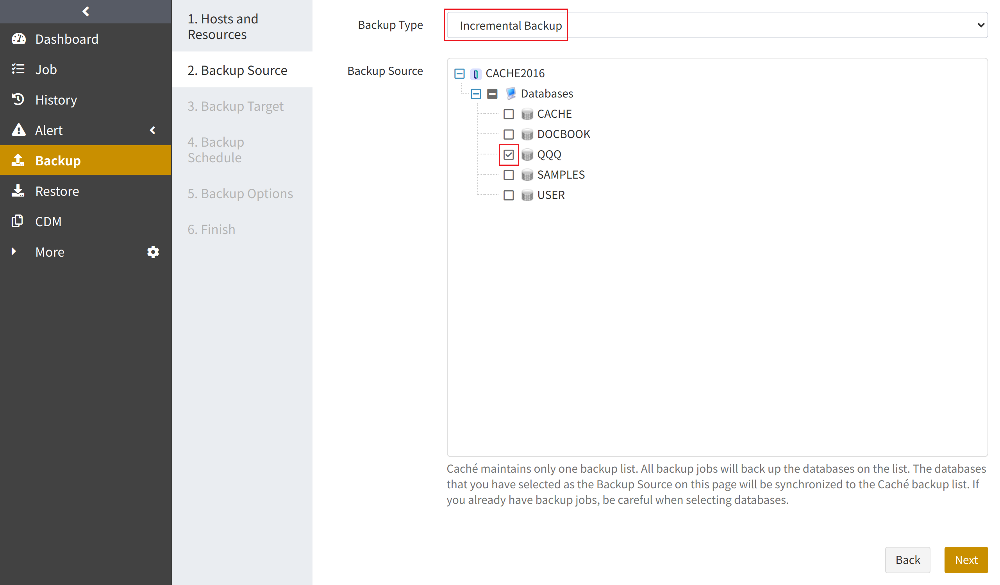
Note:
If the database has never been fully backed up, or has not been fully backed up after the restore, the first incremental backup will be run as a full backup by default.
Create Log Backup Jobs#
Based on periodic full and incremental backups, you can also add frequent log backups to back up the journals of the database. The appropriate log backup frequency depends on the balance between your tolerance for the risk of work loss and the number of log backups you can store, manage, and potentially restore. Performing a log backup every 15 to 30 minutes may be sufficient. But if your business requires minimizing the risk of work loss, consider running more frequent log backups. More frequent log backups also increase the frequency of log truncation, making log files smaller.
Creating a log backup job is the same as creating a full backup job. Select Log as the backup type.
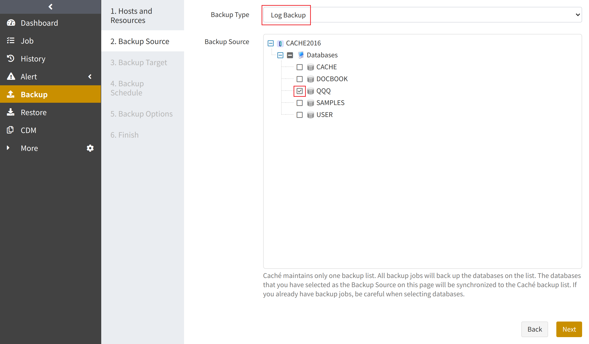
Note:
Log backup requires the Global Journal State database option enabled.
Set reasonable values for the When to purge journal files database options.
Create Restore Jobs#
This chapter introduces how to restore Caché databases. ADPS provides two restore types: timepoint restore and recovery testing.
Prerequisites#
A backup job has been completed successfully. See Create Backup Jobs.
To restore to another host, install the agent on that host, activate its license, and assign the resource to users.
Create Timepoint Restore Jobs#
When a logical error or a disaster occurs in a Caché database, timepoint restore allows you to restore the database to a specific point in time. This restore type restores the database to the state of the most recent full backup first, and then uses backup logs to restore the database to the specified point in time.
(1) Select the Cache host and resource. Click Next.
(2) Select Timepoint Restore as the restore type, and select the Database. You can select a backup set by clicking the time displayed next to the Restore to Point-in-time option, and specify a point in time by dragging the slider control. Click Next.
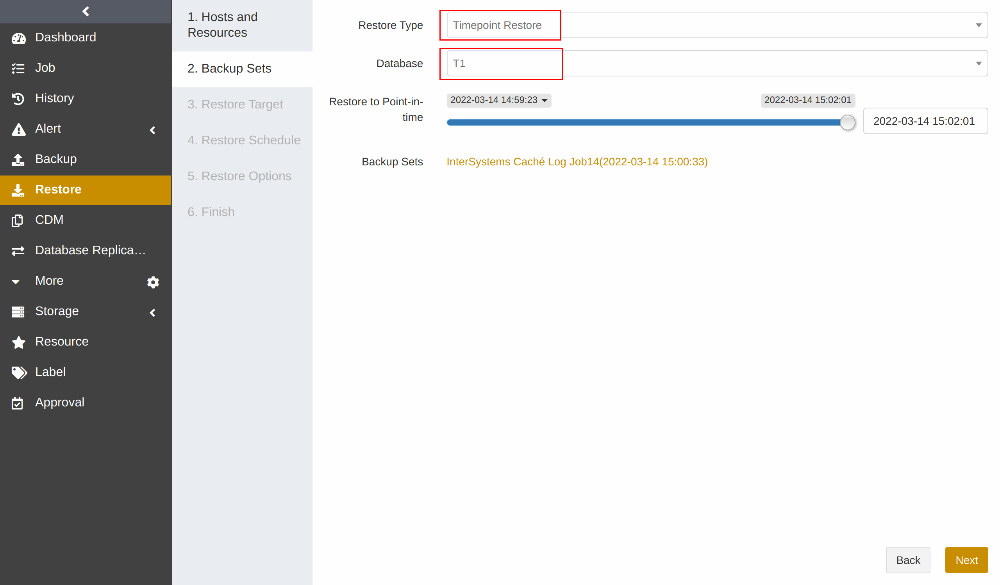
(3) Set Restore Target. The restore target can be the source host or a different host. Restoring to a different host requires the same OS and database versions. Click Next.
Note:
To restore to another instance on the source or different host, it is required to select the database with the same path and same name; otherwise, it will only be restored to the most recent full or incremental backup point in time.
(4) Set Restore Schedule. It only supports immediate and one-time restore schedules.
(5) Set Restore Options. Click Next.
(6) Confirm the job information and submit the job.
Create Recovery Testing Jobs#
Recovery testing verifies the integrity and availability of the backup set. With the hourly, daily, weekly, or monthly schedule, you can use recovery testing to restore the latest Caché backup set to another instance.
(1) Select the Caché host and instance. Click Next.
(2) Select Recovery Testing and select the restore source. You can specify the database name by clicking the Rename icon next to the selected database.
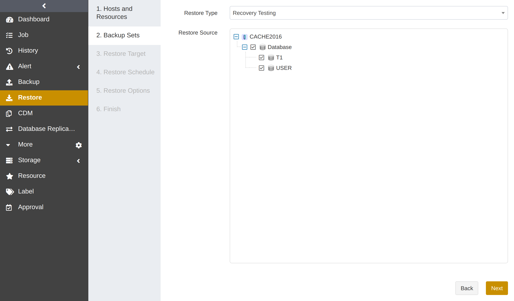
(3) Select Restore Target. The source instance cannot be selected as the restore target. The selected restore target requires that the database version is consistent with that of the source database. Click Next.
(4) Set Restore Schedule. It supports hourly, daily, weekly, and monthly schedule types. Click Next.
(5) Set Restore Options. Click Next.
(6) Confirm the job information. Click Submit.
(7) Wait for the job cycle to be executed. The job will restore the latest backup sets of the source host.
Manage Jobs#
The Job page provides the job information of all agents. You can start, modify, and delete the jobs.
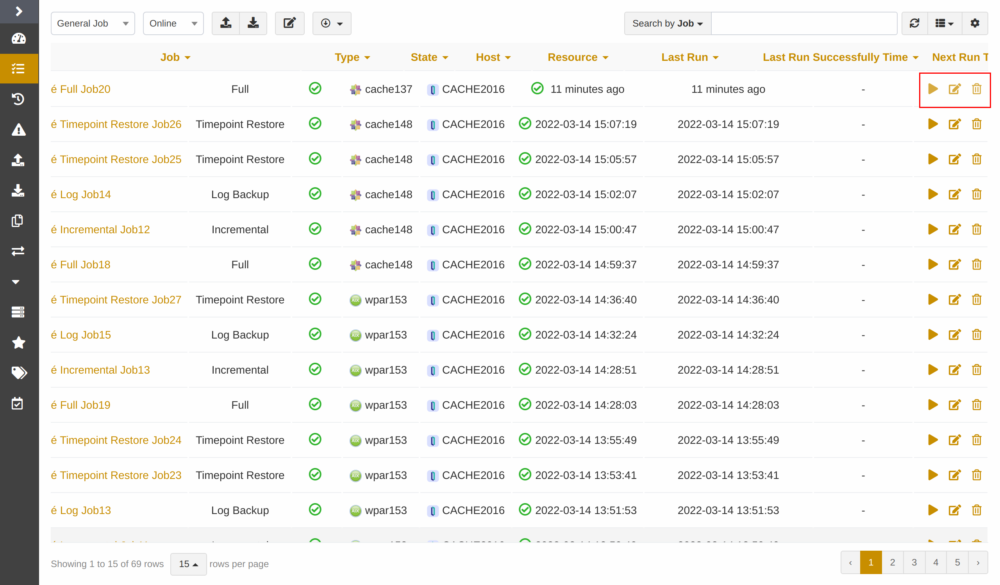
Start: Click to start the job immediately.
Modify: Click to modify the basic job information, the backup/restore schedule, and the backup/restore options.
Delete: Click
 to access the confirmation window. Click OK to delete the job.
to access the confirmation window. Click OK to delete the job.
Backup Protection Strategy#
Backup Schedule Operation#
ADPS provides six types of backup schedules. The schedule type selected is only valid for the currently created job.

Immediate: The job immediately starts to run after it is submitted.
One time: After the job is created, it will be in an idle state and start to run when the specified Start time is reached.
Hourly: After the job is created, the first run will be initiated at the specified Start Time. The next run will be executed after a specified number of hours/minutes within the time range according to the setting. If the unit is Hour, then you can set the value from 1 to 24. If you select the Minute as the unit, then you can set the value from 1 to 60.
Daily: After the job is created, the first run will be initiated at the specified Start Time. The next run will be executed after a specified number of days according to the setting. The value is an integer between 1 and 5.
Weekly: After the job is created, the first run will be initiated at the specified Start Time. The next run will be executed after a specified number of weeks according to the setting. You can specify which day of the week to run the job.
Monthly: The job runs on the specified days of some months at the specified time. For example, you can set the job to run on January 1 and June 1 at 20:00. Or you can set it to run on the first Monday of every month at 20:00.
Example: Perform the job every two weeks on Friday at 18:00

The actual execution time is:
If the current time is Friday at 17:00, the execution time will be Friday at 18:00 (the current day).
If the current time is Thursday at 17:00, the execution time will be Friday at 18:00 (the next day).
If the current time is Saturday at 17:00, the execution time will be next Friday at 18:00
After the first run is completed, the job will start automatically at 18:00 on Friday every two weeks.
Backup Strategy Advice#
There are three types to back up Caché: full backup, incremental backup, and log backup. Full backup, incremental backup, and log backup can be used together. It is recommended to formulate the following backup strategy according to different situations such as network bandwidth, business data volume, security requirements, and the amount of lost data that you can tolerate.
When the application traffic is relatively small, run a Full Backup once a week to ensure that you have at least one recoverable RTO every week.
After that, you can run an Incremental Backup every day to reduce the backup time and ensure that you have at least one recoverable RPO every day.
If the database supports log backup, you can run a Log Backup every few hours to ensure that the restore granularity RPO can reach the second level.
Note:
Avoid using the following strategies:
Perform only full backups.
Perform a full backup followed by all incremental or log backups.
Limitations#
Function |
Limitations |
|---|---|
Backup |
Do not support the following types of databases: dismounted, read-only, and CACHESYS. |
Restore |
The restore of the database using the interactive key activation is not supported. If you need to restore to the encrypted instance, it is recommended to set the unattended key activation or disable the encryption feature and then enable it after the restore job is completed. |
Glossary#
Term |
Description |
|---|---|
Global Journal |
Record all DDL operations |